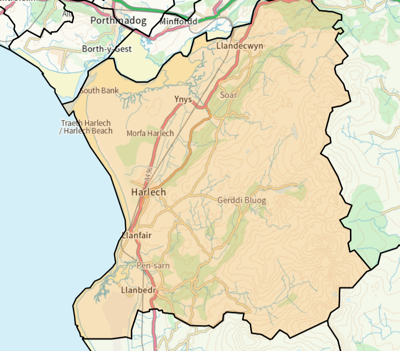

Harlech a Llanbedr
Data
| Polling District | Electors | Households |
|---|---|---|
| Harlech (N1) [48.4%] | 1,130 | 678 |
| Talsarnau (AF1) [18.9%] | 468 | 264 |
| Llanbedr (AE1) [17.9%] | 449 | 250 |
| Llanfair (AU1) [10.1%] | 238 | 141 |
| Llanfair (N2) [4.8%] | 102 | 67 |
| Total | 2,387 | 1,400 |
Ward Boundary
